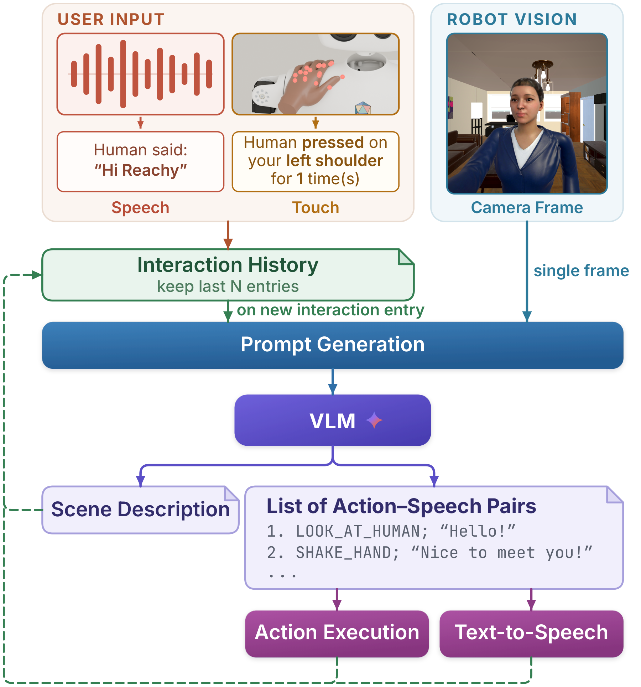
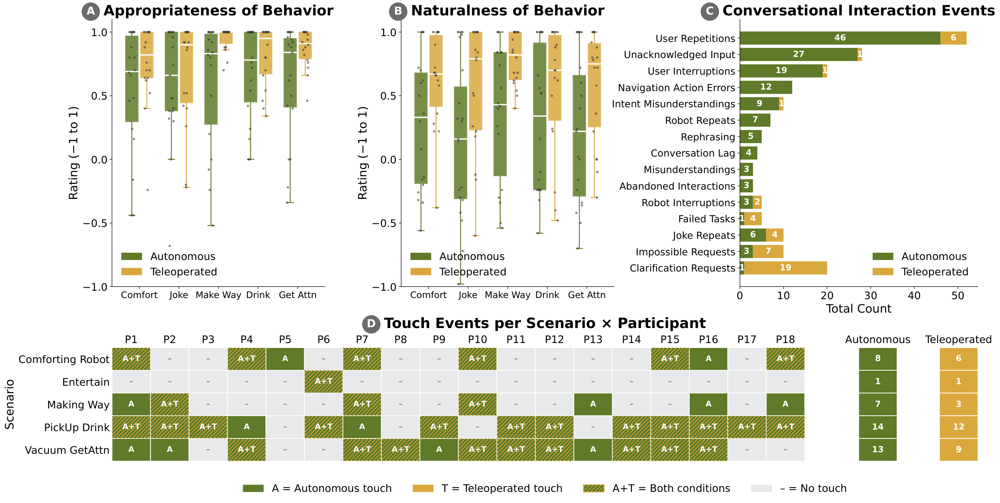

Conversational timing, clarification, and spatial coordination emerged as key areas to improve.
Evaluated in virtual reality; physical-robot validation is future work.
We integrate speech, vision, and social touch to generate coordinated robot speech and movement. In a VR study with 18 participants across five social scenarios, autonomous behavior was rated above neutral for naturalness and appropriateness, while human teleoperation scored higher.
Our framework, study, and example interactions in 3 minutes. Download video


Conversational timing, clarification, and spatial coordination emerged as key areas to improve.
Evaluated in virtual reality; physical-robot validation is future work.